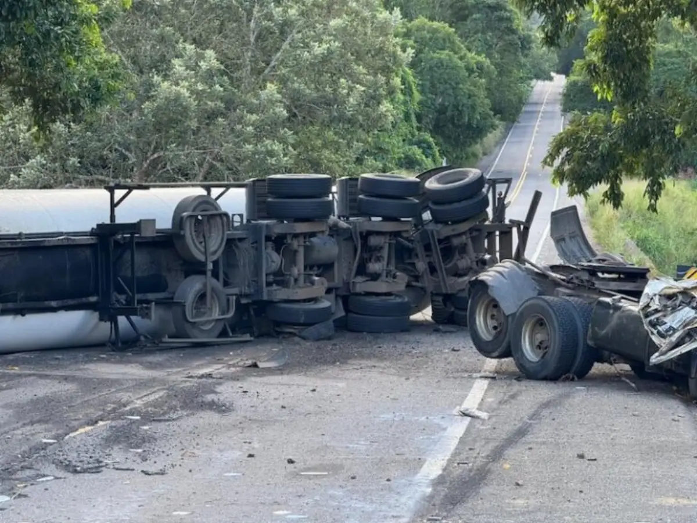

Repórter Davi
Notícias de Feira de Santana e Região
Repórter Davi
Notícias de Feira de Santana e Região
O jovem, que ainda não foi identificado, passava pelo local no momento do acidente e acabou sendo atingido.
Publicado em 05/05/2026

Foto: Ubaitaba Urgente
Um grave acidente registrado na tarde desta terça-feira (5) deixou um ciclista morto na BR-330, no trecho entre Ubatã e o trevo de Ubaitaba, nas proximidades da região do Oricó.
O jovem, que ainda não foi identificado, passava pelo local no momento do acidente e acabou sendo atingido. Ele não resistiu aos ferimentos e morreu no local. O ciclista era morador da região.
Segundo informações divulgadas pelo Giro Ipiaú, site parceiro do Acorda Cidade, uma carreta que transportava gás GLP (Gás Liquefeito de Petróleo) seguia em direção ao município de Ubatã quando o motorista perdeu o controle da direção ao passar por uma curva. O veículo tombou, capotou e ficou atravessado sobre uma ponte, interditando completamente o tráfego na rodovia.

Foto: Ubaitaba Urgente
Com a força do impacto, o cavalinho da carreta ficou totalmente destruído.
O motorista da carreta foi socorrido por uma equipe do Serviço de Atendimento Móvel de Urgência (Samu) e encaminhado para uma unidade hospitalar. Até a última atualização, não havia informações sobre o estado de saúde dele.
A Polícia Rodoviária Federal (PRF) foi acionada para controlar a área e organizar o trânsito. Há suspeita de vazamento de gás, o que aumenta o risco no local e exige maior atenção das equipes de segurança. A pista segue totalmente interditada, e a orientação é que motoristas evitem transitar pela região até a liberação do trecho.
Até a publicação desta reportagem pelo site parceiro não há confirmação sobre a liberação da rodovia.